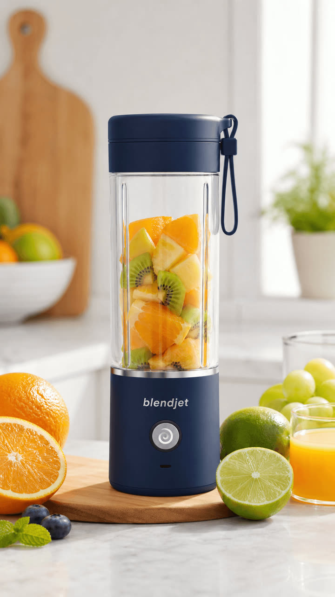
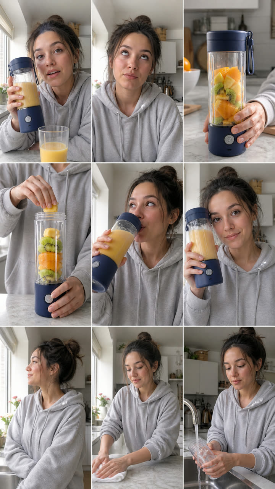

Dành cho người bán TikTok Shop · Shopee · Facebook · Shopify
Tải ảnh sản phẩm hoặc dán link sản phẩm. AI tìm điểm bán hàng, viết kịch bản kiểu review, kể chuyện, đập hộp, giữ sản phẩm y như ảnh thật, thêm cảnh quay chuyển động, giọng đọc, phụ đề và nhạc nền — sẵn sàng đăng TikTok, Shopee Video, Facebook Reels.
Không cần lộ mặt · Không watermark · Bản cắt nhanh miễn phí, bản AI tính phí theo key của bạn


Tải ảnh sản phẩm, dán link sản phẩm hoặc gõ một câu chủ đề. Chọn 🆓 Cắt nhanh miễn phí hoặc ✨ Video AI — chi phí hiện rõ trước khi chạy.
AI viết lời thoại theo nhiều phong cách: đánh vào nỗi đau, review so sánh, kể chuyện, đập hộp. Bạn duyệt xong mới bấm tạo — chỉ một lần bấm xác nhận mới tính phí.
Hình ảnh, giọng đọc, phụ đề, nhạc nền được ghép tự động. Đổi khung 9:16 / 1:1 / 3:4, sao chép caption + hashtag — đăng ngay.
Bối cảnh, ánh sáng thay đổi, còn sản phẩm giữ nguyên như ảnh thật — khách thấy gì nhận nấy.
Nhiều phong cách UGC: nỗi đau, review, kể chuyện, trước – sau, đập hộp, hội thoại nhiều giọng.
Một sản phẩm → nhiều biến thể hook và phong cách để A/B test, không trùng lặp nội dung.
Nhập lượt xem, đơn hàng sau khi đăng — hệ thống học kiểu kịch bản và hook nào bán chạy hơn.
Đúng tỉ lệ cho TikTok, Shopee Video, Facebook Reels, YouTube Shorts, Amazon kèm caption, hashtag.
Giọng đọc AI tiếng Việt và tiếng Anh, phụ đề tự động — một người làm hàng chục video mỗi ngày.
Không cần cài: mở trên trình duyệt máy tính, điện thoại hay iPad và bấm “Tạo video ngay”.
Windows 10/11 64-bit · RAM 8 GB trở lên · trống ~2 GB ổ đĩa. Tải file .exe, cài đặt và mở là dùng.
macOS 12 trở lên · Apple Silicon (M1+) hoặc Intel · RAM 8 GB trở lên. Tải file .dmg, kéo vào Applications.
Khuyên dùng: web app chạy ngay trên mọi thiết bị, không cần cài đặt. App máy tính (tùy chọn) dành cho ai muốn chạy trên máy riêng với API key của mình — dữ liệu dự án lưu trên máy. Nếu macOS chặn lần mở đầu: chuột phải vào app → Mở.
Bản cắt nhanh dùng hình ảnh có sẵn, giọng đọc và nhạc nền miễn phí — 0đ, không watermark. Video AI chất lượng cao tính phí theo key mô hình của bạn, giá hiện trước khi bấm.
Không. Ảnh sản phẩm được khóa khi tạo hình, chỉ bối cảnh và ánh sáng thay đổi.
Được. Giao diện và giọng đọc có tiếng Việt và tiếng Anh; kịch bản viết theo ngôn ngữ bạn chọn, phù hợp TikTok Shop, Shopee, Amazon, Shopify.
Chỉ cần thả ảnh sản phẩm, đọc qua kịch bản và nhận video hoàn chỉnh. Muốn chỉnh từng cảnh thì bật chế độ nâng cao.
Ngay trên trình duyệt, không cần cài đặt. Bấm “Tạo video ngay” để bắt đầu.
Không lộ mặt · không watermark · tạo hàng loạt trong vài phút.